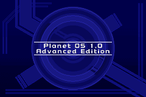
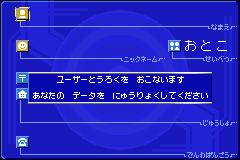

Gachasute! Dino Device - Blue (Japan)
Flash 512K gbakit Built-In Debug Menu Patch 💾 MultiBoot 🎮 4P Link
Cartridge Identity
- Game Code
ABIJ(FamilyABI)- Header Title
DINODEVICE B- Maker / Revision
2N/ rev0- ROM Size
- 8.0 MiB (8,388,608 B)
- Save Media
Flash 512K- SHA-256
ad808c271dcb9596e745b8b47956a1c971b58a079afc50f34e4361b7a05a8deb- Engine / SDK Group
comm-010(33 families)
Screenshots


Debug Menu Re-Enablement Patch (.ips)
Download ABIJ-debug.ips (15 B IPS / 2 B delta)
- Hook Mechanism
thumb_imm_scene_override· Patch scene dispatcher at 0x08004dd2 (ldr r0,[r4] -> movs r0,#50) to select jump-table index 49 (AGB SYSTEM DEBUG MENU at 0x0800ad9d)- IPS SHA-256
5d8ba4a68fa537a189ec389b3784ca684e401e2f30ccde9554f9ecfaa884e9b0
gbakit patch apply ABIJ-debug.ips original.gba patched-debug.gbaLink Cable & Multiplayer Communications
This title contains detected communication capabilities: 💾 MultiBoot 🎮 4P Link.
Detailed protocol specifications, SIO registers, Joybus commands, and MultiBoot sequences are documented in the Link & Multiplayer Reference.
- Multi-Player SIO (4P)
- 16-bit ring network · SIOCNT (
0x04000128) literals:0x006394,0x0063f0,0x0067bc· SIODATA32/SIOMULTI0 (0x04000120) literals:0x0064b0,0x006514,0x006580 - Single-Cart MultiBoot
- Single-Cartridge MultiBoot (Download Play) client/server handler · Thumb SWI 0x25 (
0xDF25):0x0a757e,0x15c8ea,0x1b2664,0x2913c0
Battery Save Support in gbakit
Built-in definition (ABIJ)
gbakit save verify ABIJ save.sav
gbakit save decode ABIJ save.sav
gbakit save fix ABIJ damaged.sav -o repaired.savROM Assets, Compression & Audio
- BIOS Compression
- LZ77 (
0x10): 1 streams · RLE (0x30): 0 streams - ROM Pointer Tables
- 52 tables (0 pointing to validated compressed streams)
- SDK Backup Tags
FLASH_V126
Text, Fonts & Scene Data
- Primary Text Encoding
- Custom 16-bit Huffman (
29ASCII strings ·200Shift-JIS runs) - Font & VWF Indicators
- VWF Width Table 1bpp Font · BIOS SWIs: BitUnPack
0x10:4· LZ770x11/12:6· Huffman0x13:3· RLE0x14/15:2 - Scene & Packaging
39ROM pointer tables (≥32 entries,6≥200) ·303relativeu32TOCs ·277OAM metasprite hits
Hardware MMIO Subsystems
ppu_display0x8000cc4,0x80013a8save_bus_sram_flash0x80a7594,0x80a78f4